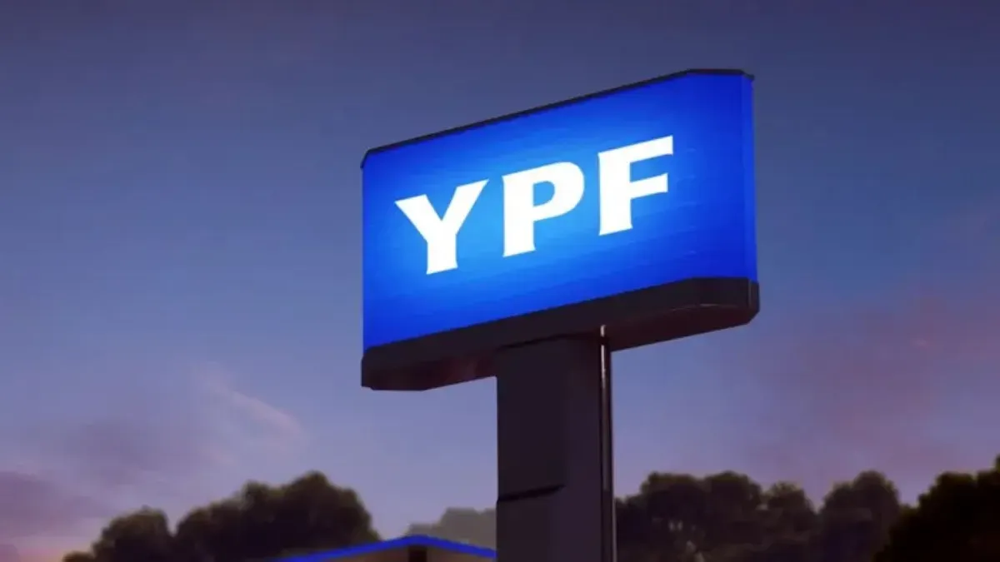
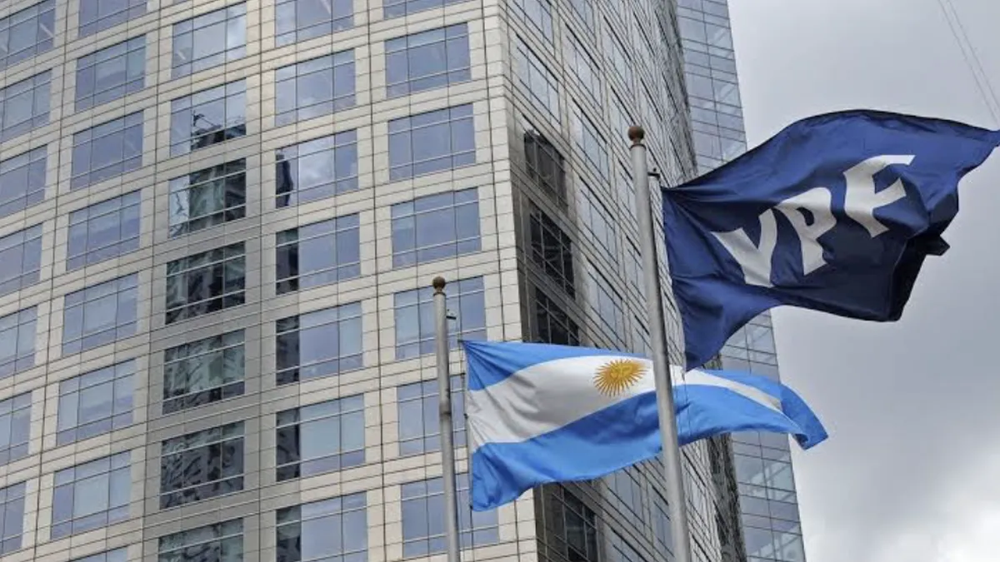

Noticias relevantes

üîπ Encarcelamiento de Cristina Fernández.

üîπ Javier Milei denunci√≥ por injurias.
üîπ Real Madrid no falla.
üîπ Trump "quiere salvar vidas" y "poner fin a la brutal guerra".
Juicio por la expropiación de YPF
En un escenario económico frágil, con reservas negativas en el Banco Central, inflación persistente y una profunda crisis estructural, Argentina enfrenta un nuevo y potencialmente devastador desafío: una sentencia judicial en los Estados Unidos que podría obligar al Estado nacional a pagar hasta US$16.000 millones como consecuencia de la expropiación de YPF en 2012. Este juicio, que en los últimos años ha pasado de ser una disputa jurídica más a convertirse en un problema de Estado, amenaza con tener un impacto directo sobre la economía, la política y la vida cotidiana de todos los argentinos.
¿Cómo empezó todo?
En 2012, durante el segundo mandato de la entonces presidenta Cristina Fernández de Kirchner, el Congreso aprobó la ley de expropiación del 51% de las acciones de YPF, con el objetivo de “recuperar la soberanía energética”. Estas acciones estaban en manos de la petrolera española Repsol y del Grupo Petersen, vinculado a la familia Eskenazi, que había adquirido un porcentaje importante de la empresa con financiamiento de la propia YPF, sin poner capital propio.
Si bien el Estado argentino finalmente acordó una compensación con Repsol en 2014, no hizo lo mismo con el Grupo Petersen, cuyos derechos de litigio fueron luego adquiridos por Burford Capital, un fondo buitre dedicado a financiar demandas judiciales con el objetivo de obtener grandes ganancias si el juicio es favorable.
Burford presentó la demanda contra la República Argentina y contra YPF S.A. en los tribunales de Nueva York, argumentando que el gobierno incumplió el estatuto de la empresa que obligaba a hacer una oferta pública de compra a los demás accionistas en caso de tomar el control de la compañía.
En 2023, la jueza neoyorquina Loretta Preska falló en contra de la Argentina, y fijó la indemnización en un monto que supera los US$16.000 millones. El Estado apeló el fallo ante la Corte de Apelaciones del Segundo Circuito de Nueva York, que en los próximos meses deberá decidir si ratifica o anula la condena.
¿Por qué es tan grave este juicio para Argentina?
La magnitud de la sentencia pone a la Argentina ante una de las condenas económicas más grandes de su historia judicial. Para dimensionarlo: US$16.000 millones representan aproximadamente el 10% del Producto Bruto Interno (PBI) del país, más del doble de todas las reservas disponibles del Banco Central, y un monto muy superior al total del presupuesto de áreas clave como salud, educación o seguridad.
La situación se vuelve aún más crítica si se considera el contexto económico actual: las reservas netas del Banco Central están en terreno negativo (alrededor de -US$6.000 millones), el país mantiene una deuda abultada con el Fondo Monetario Internacional (FMI) y está negociando un nuevo programa de financiamiento por US$20.000 millones con ese organismo para evitar un colapso de pagos.
En este marco, un fallo adverso que obligue a pagar US$16.000 millones en el corto plazo representaría una amenaza directa a la estabilidad financiera nacional, y podría implicar la necesidad de tomar deuda de emergencia, ejecutar recortes aún más severos del gasto público, o incluso vender activos estatales, todo en medio de una crisis social y económica que ya empuja al límite a amplios sectores de la población.
Consecuencias concretas para el país y la población
La conservación del Parque Nacional Nahuel Huapi requiere el compromiso tanto de autoridades como de visitantes. Algunas de las acciones clave incluyen:
- Impacto en las finanzas públicas Un pago de esta magnitud obligaría al gobierno argentino a redireccionar recursos ya escasos. Esto podría significar recortes en partidas presupuestarias sensibles, como jubilaciones, subsidios sociales, obras públicas o salud. También es probable que el Estado deba endeudarse nuevamente en condiciones desfavorables, lo que aumentaría el peso de la deuda pública a futuro.
- Presión sobre el tipo de cambio y la inflación La sola expectativa de un fallo desfavorable puede generar nerviosismo en los mercados, lo que a su vez se traduce en una suba del dólar paralelo, una mayor demanda de divisas, y una depreciación del peso. Esto tendría un efecto inflacionario directo, impactando sobre los precios de los alimentos, la energía y los productos importados.
- Complicaciones para la política económica del gobierno de Milei El presidente Javier Milei ha construido su programa económico sobre tres pilares: equilibrio fiscal, acumulación de reservas y atracción de inversiones. Una sentencia judicial de esta magnitud desbarataría ese plan: no solo compromete los recursos disponibles, sino que también pone en duda la seguridad jurídica y la credibilidad del país ante inversores extranjeros. Además, podría afectar negativamente las negociaciones en curso con el FMI, ya que el organismo podría exigir nuevas garantías o ajustes adicionales a cambio de un eventual rescate financiero.
- Costos legales y reputacionales El juicio en Nueva York también refleja las consecuencias de decisiones opacas y mal implementadas del pasado. La falta de transparencia en el proceso de expropiación de YPF, la omisión de pasos legales fundamentales y la improvisación política hoy se traducen en miles de millones de dólares en juego. A nivel internacional, el caso consolida la imagen de Argentina como un país judicialmente riesgoso, lo que desalienta futuras inversiones y encarece el acceso al crédito externo.
- Embargos y confiscaciones de bienes argentinos en el exterior Si la sentencia se confirma y Argentina no paga, los demandantes podrían solicitar embargos sobre activos del Estado argentino en el extranjero, como cuentas bancarias, bienes diplomáticos o activos de empresas públicas como Aerolíneas Argentinas o Enarsa. Esto ya ha ocurrido en casos anteriores, como el conflicto con los fondos buitres en la década pasada.
El destino de una nación en manos de tres jueces
Tal como lo expresó el escritor y abogado estadounidense William D. Cohan en un artículo publicado recientemente en el diario británico Financial Times: “En un extraño giro del destino, tres jueces estadounidenses tienen el destino de una nación en sus manos”. La definición de la Corte de Apelaciones del Segundo Circuito podría no solo sentar jurisprudencia en términos internacionales, sino también marcar el rumbo económico, político y social de la Argentina en los próximos años.
Una sentencia de tal magnitud excede lo legal o lo financiero: se transforma en un hecho político de consecuencias históricas, que podría condicionar severamente el margen de maniobra del gobierno actual y de los que le sigan.
Una advertencia para el futuro
El caso YPF debe servir también como una advertencia sobre los riesgos de gobernar sin previsión jurídica ni institucional, y sobre la importancia de actuar con responsabilidad al tomar decisiones estratégicas que comprometen el patrimonio público. Las consecuencias de las malas decisiones políticas pueden tardar años en llegar, pero cuando llegan, lo hacen con una fuerza demoledora.